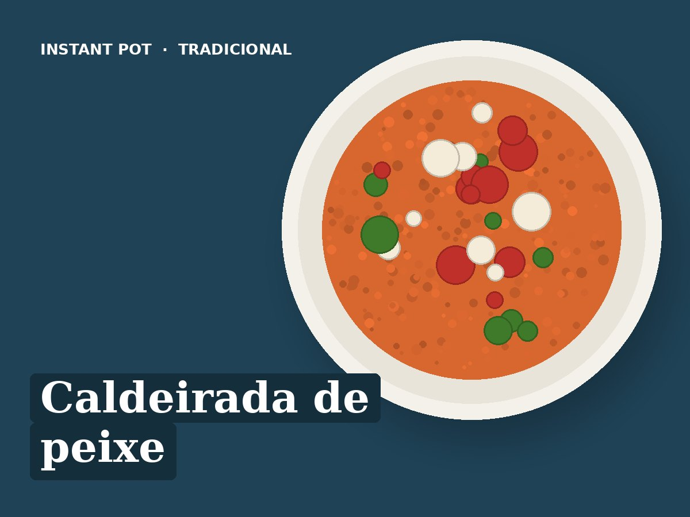

Caldeirada de peixe
Ingredientes
- 600 g de peixe firme em postas (tamboril, cação ou pescada)
- 500 g de batata às rodelas finas
- 1 cebola às rodelas
- 1 pimento vermelho às tiras
- 2 tomates às rodelas
- 2 dentes de alho
- 100 ml de vinho branco
- 150 ml de água
- 1 folha de louro
- 1 colher de chá de colorau
- Salsa ou coentros
- 2 colheres de sopa de azeite
- Sal q.b.
Preparação
- Pôr o azeite no fundo da panela e fazer camadas: cebola, batata, tomate e pimento. Temperar com sal, alho, louro e colorau.
- Pôr o peixe por cima, temperado com sal. Juntar o vinho e a água.
- Pressão alta, 4 minutos. Libertação rápida.
- Polvilhar com salsa ou coentros e servir.